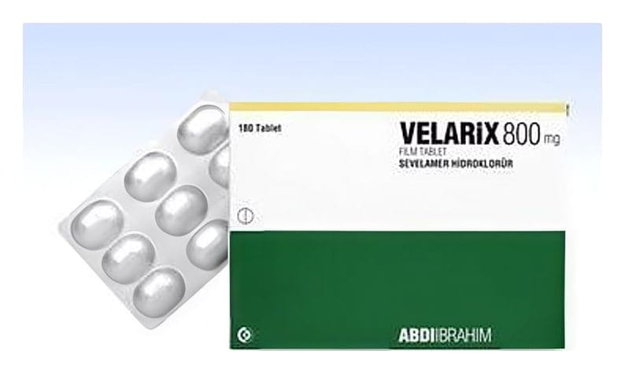

Velarix 800 mg Film Kaplı Tablet ,180 Tb

Ne için kullanılır
KT · Bölüm 1VELARİX, krem renkli, bikonveks, oval film kaplı tablerden oluşa n 180 tabletlik blister ambalajlarda sunulur.
VELARİX
etkin madde olarak sevelamer hidroklorür içerir. Sevelamer hidroklorür, sindirim yolundaki yiyeceklerdeki fosforu bağlar ve bu şekilde kandaki fosfor seviyelerini düşürür. Hemodiyaliz veya periton diyaliz tedavisi gören yetişkin böbrek yetmezliği hastalarında kandaki fosfor seviyesi kontrol edilemez. Kandaki fosfor seviyesi yükselir (doktorunuz bunu hiperfosfatemi olarak adlandıracaktır). Kandaki fosfor seviyesinin yükselmesi vücudunuzda katı artıkların oluşmasına neden olabilecek kalsifikasyon olarak isimlendirilen duruma sebebiyet verebilir. Bu artıklar kan damarlarınızı tıkayabilir ve vücudunuzdaki kan akışını zorlayabilir. Kandaki fosfor seviyesinin yükselmesi ayrıca deride kaşıntı, gözde kırmızılı k, kemik ağrısı ve kırıklara neden olabilir.
VELARİX hemodiyaliz veya periton diyaliz tedavisi gören yetişkin böbrek yetmezliği hastalarında kandaki fosfor seviyesinin kontrol edilmesi için kullanılmaktadır.
Böbrek kaynaklı kemik hastalığı gelişiminin kontrol edilmesi için VELARİX ile birlikte kalsiyum veya Vitamin D takviyesi gibi başka ilaçların da kullanılması gerekli olabilir.